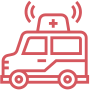
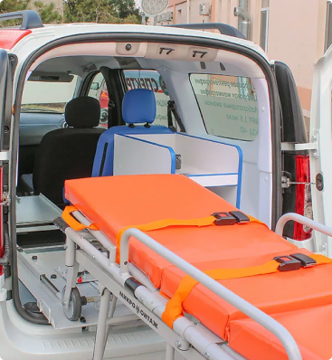
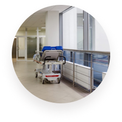
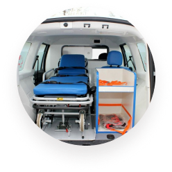
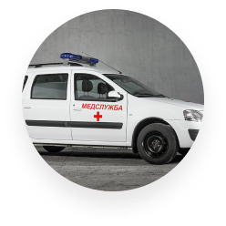
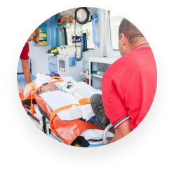

инто-мед — медицинское такси по перевозке лежачих больных в москве, Мо и по всей России с душой и заботой!
Перевозка лежачих больных, людей с ограниченными возможностями, инвалидов-колясочников
-
Оборудование
Современное оборудование для Вашего комфорта и безопасности -
Транспорт
Перевозка только на новых автомобилях Лада Ларгус -
спектор услуг
Мы предлагаем широкий спектр услуг и индивидуальный подход к каждому клиенту.
Популярные услуги
- Перевозка инвалидов колясочников
- Сопровождение в медицинских учреждениях
- Транспортировка лежачих больных в Москве
- Подъём на лифте лежачего больного
- Перевозка лежачего больного из больницы домой
- Доставка на вокзал
- Перевозка от кровати до кровати
Перевозка лежачих больных в Москве осуществляется на профессиональном транспорте, с профессиональным оборудованием.
Имея большой опыт работы с людьми, «Инто-Мед» гарантированно привезёт вас в комфортном для вас режиме.
Мы особенно часто работаем с инвалидами и инвалидами колясочниками.
-
Безопасная перевозка в время COVID-19. Нам важно Ваше и наше здоровье.
-
Дезинфицируем салон автомобиля после каждой поездки и все материалы.
-
Мы тщательно соблюдаем гигиену и безопасность!
-
Используем маски и другие средства защиты.
НАши цены
| Зона работы | график | СТОИМОСТЬ |
|---|---|---|
| Москва | День с 8:00 до 20:00 в раб. дни | 2400 руб/час |
| Ночь с 20:00 до 8:00 | Звоните | |
| Выходные дни с 8:00 до 20:00 | 2600 руб/час | |
| Московская область | Рабочие и выходные с 8:00 до 20:00 | 60 руб/км |
Дополнительные услуги и условия:
- Время начала транспортировки (перевозки) исчисляется с момента прибытия санитарного транспорта по адресу клиента.
- При весе клиента более 120 кг: + 1000 рублей к общей стоимости заказа.
- При весе клиента более 90 кг: + 500 рублей к общей стоимости заказа.
- Вызов бригады санитаров только для подъема клиента на этаж: по согласованию
По договорной цене осуществляются перевозки на расстояние более 50 км от Москвы
- Города России и СНГ
- Евросоюз и зарубежье
- Труднодоступные места
-
Скорость
Благодаря нашей диспетчерской системе и навигации с функцией «Пробки» среднее время подачи автомобиля по Москве в течение одного часа ! -

Транспорт
Новейшее оборудование и надежный автотранспорт всегда на службе у наших клиентов -
Низкие цены
Вы оцените соотношение качества услуги и цены. Мы делаем цены одинаково удобными для всех.
В практическом здравоохранении нередки случаи, когда оказание достаточной
медицинской помощи невозможно на дому или месте происшествия, либо условия медучреждения не позволяют в
полном объеме выполнить все необходимые врачебные манипуляции. В таких случаях необходима наша услуга.
Однако извоз на собственном автомобиле может нанести человеку дополнительную травму, такой процесс можно
доверить только профессионалам.
- Мы перевезём лежачих больных из лечебного стационара домой с подъемом на этаж
- Доставим больных в лечебные учреждения для выполнения диагностических исследований
- Проведём перевозку лежачих больных к месту проведения отдыха или же на дачу в пределах Московской области
- Окажем помощь при бережном перемещении лежачих больных в любых других случаях
- Перевезём больных до пункта назаначения в другие города РФ
- Привезём больных на ж/д вокзал, в аэропорт
- Поднимем по лестнице или по лифте на любой этаж
Перевозка лежачих больных по Москве и Московской области бывает плановой и экстренной. В первом случае это может быть доставка домой после выписки из стационара или в профильное медицинское учреждение, на реабилитацию в пансионат или санаторий. Экстренной считается перевозка тяжелобольных людей, находящихся в острой опасности, при резком обострении имеющегося заболевания, кровоизлиянии, или получении серьезной травмы, опасной для жизни.
Возникает вопрос: как перевезти человека, не причинив вреда его здоровью? Служба помощи «Инто-Мед» готова помочь вам в любую минуту. Транспортировка лежачих больных осуществляется в соответствии со всеми правилами перевозки тяжелобольных людей.
Мы работаем по Москве, Московской области, а также по другим областям РФ и Белоруссии. Наши такси для наших клиентов — это специальный транспорт, предназначенный для перевозки пациентов с ограниченными возможностями.

Наши услуги и преимущества
Внутреннее устройство специально оборудованных санитарных автомобилей
Форд-Транзит позволяет быстро и удобно погрузить пациентов в креслах-колясках. Также в нашем автомобиле
имеются обычные пассажирские места для сопровождающих лиц. Квалифицированные экипажи из профессиональных
водителей-санитаров осуществят безопасную перевозку лежачего больного:
- детей;
- инвалидов-колясочников;
- людей с нарушениями слуха и зрения;
- пациентов с ограниченными возможностями;
- людей после операции и при инсульте;
- пожилых людей.
Когда необходимо вызывать подобное такси?
Скорая помощь заниматься перевозкой по личным делам не будет, так как это не входит в
ее компетенцию, а ситуации могут быть самыми разнообразными. Иногда перевозку требуется осуществить из
одного медицинского учреждения в другое, или вывезти на дачу, в оздоровительный центр и другие места.
Наиболее востребованными пунктами назначения наших экипажей являются:
-
перевозка пациента домой после выписки из медучреждений Москвы в города России;
-
перевозка пассажира к месту отдыха или реабилитации;
-
перевозка в больницу, клинику и др. для выполнения лечебных процедур.
-
перевозка в больницу, клинику и др. для выполнения лечебных процедур.
Во время транспортировки никакие медицинские вмешательства и процедуры не
производятся. В случае если клиент не транспортабелен или требует немедленной медицинской помощи мы не
имеем
права предоставлять Вам свои услуги. В этом случае Вам необходимо вызывать бригаду Скорой Медицинской
Помощи.